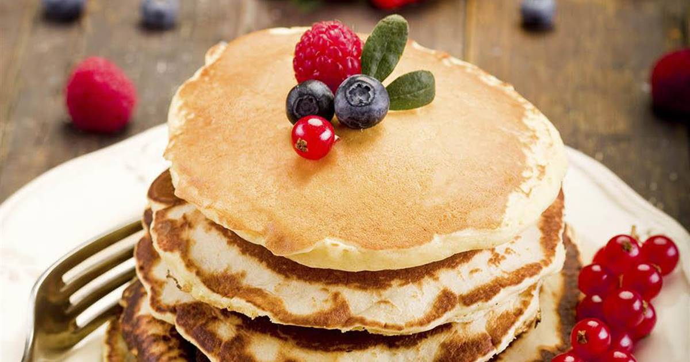
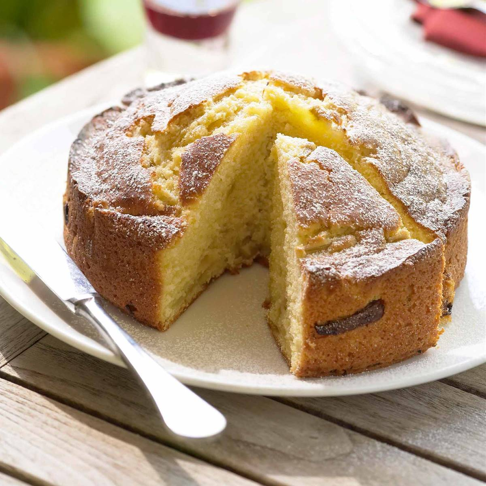
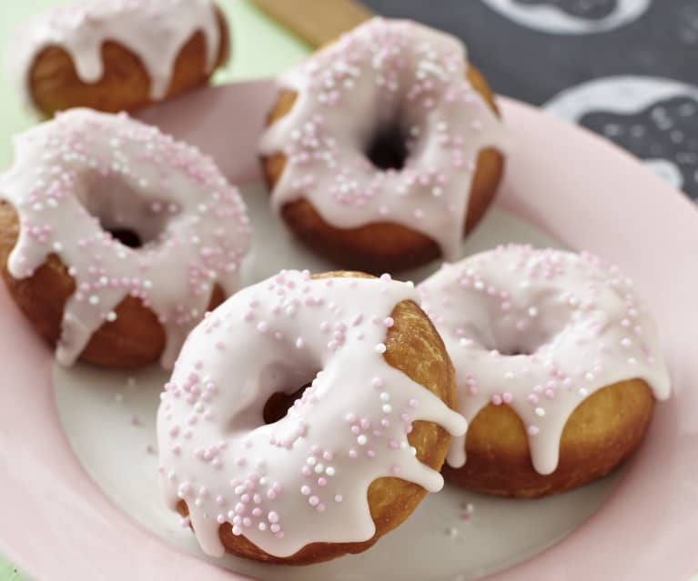
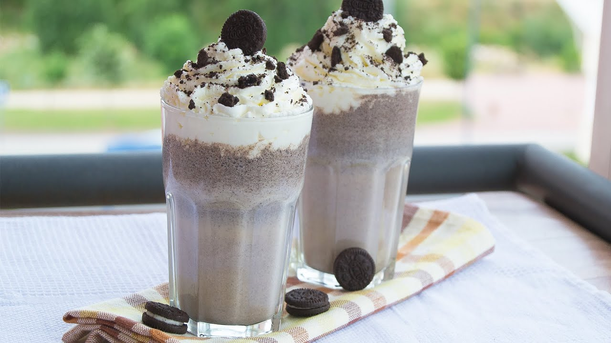
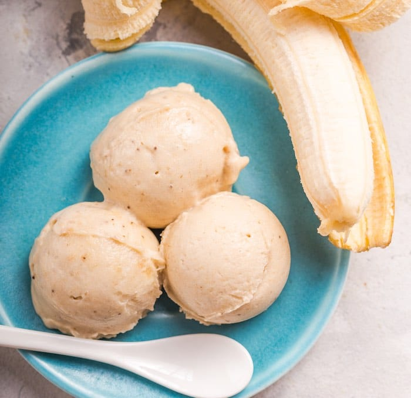
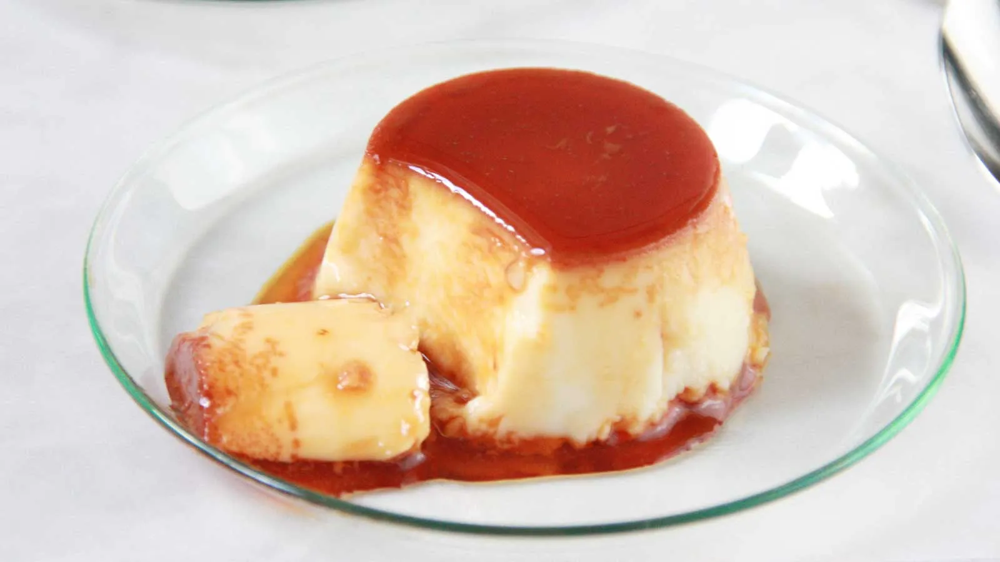

Las Tortitas Perfectas
Ingredientes
- 150 g de harina de trigo de todo uso
- 2 huevos medianos
- 25 g de azúcar blanquilla (también vale panela)
- 50 g de mantequilla
- 200 ml. de leche entera
- Unas gotas de esencia de vainilla
- 12 g de levadura en polvo (levadura química o polvo de hornear)
- Una pizca de sal fina (2 gramos)
- Para acompañar: Miel, jarabe de Arce, mantequilla, crema de chocolate, Nutella, Nocilla...
- En un bol mezclamos los ingredientes secos, la harina, levadura, azúcar y sal. Reservamos.
- Combinamos en otro bol los huevos batidos, la mantequilla derretida y la esencia de vainilla. Incorporamos los ingredientes secos y, con una varilla incorporamos a los líquidos.
- Vertemos la leche y batimos, es muy importante que no batamos demasiado la mezcla. Se trata de integrarlos pero, no es necesario intentar eliminar todos los grumos. Si lo batimos en exceso los pancakes nos quedarán demasiado duros.
- Calentamos una sartén (debe ser aquella que tengamos para que no se pegue las cosas, la de las tortillas o cosas a la plancha).
- Cuando esté caliente añadimos un cucharón de la mezcla de las tortitas, comenzando a verterlo por el centro y dejando que sea la propia masa la que se redistribuya en la sartén. Es importante que regulemos la temperatura hacia arriba o hacia abajo durante todo el proceso.
- Si la masa no se cuaja al añadirla a la sartén estará demasiado fría y si, por el contrario, la parte inferior se quema antes de que aparezcan burbujitas en la parte superior, estará demasiado caliente.
- Cuando vemos que aparecen burbujas en la parte superior de la tortita es el momento de darle la vuelta con una espátula. Cocinamos el pancake por el otro lado durante 30 o 40 segundos y retiramos.
- Podemos añadir a la masa una vez que la vertemos en la sartén algún tipo de frutas frescas, arándanos, frambuesas, serán perfectas como acompañamiento.
- Servimos las tortitas unos encima de otros haciendo una torre, bañados con miel, una merienda de rechupete. Como alternativa podemos sustituir la miel por crema de cacao casera o aquella que más os guste, ¡buenísimas! Incluso pueden ir con un toque de fruta… arándanos, plátano, fresas, cerezas o frambuesas, por ejemplo.

El Brownie Perfecto
Ingredientes
- 200 gramos de chocolate negro
- 110 gramos de mantequilla
- 4 huevos
- 120 gramos de azúcar
- 1 cucharada de esencia de vainilla
- 85 gramos de harinaç
- bicarbonato
- Nueces
- Pepitas de chocolate
- En un bol ponemos el chocolate y la mantequilla. Lo metemos al microondas a temperatura media para que se vaya derritiendo. Una vez derretido lo lo mezclamos muy bien.
- Ponemos los 4 huevos y el azúcar en un bol.
- Agregamos la harina y la cucharadita de bicarbonato. Mezclamos muy bien.
- Agregamos el chocolate que hemos derretido junto con la mantequilla y el toque de vainilla. Seguimos mezclando.
- Agregamos las nueces y las pepitas de chocolate.
- En un recipiente de horno ponemos un poco de mantequilla y harina para que no se nos pegue el brownie.
- Incorporamos la mezcla y cubrimos con unas pepitas y unas nueces (opcional). Introducimos al horno durante 30-35 minutos a 180º.

El Mejor Bizcocho con Nueces
Ingredientes
- 350 g. de harina de trigo común 00
- 180 g. de azúcar blanquilla
- 1 sobre de levadura química en polvo (16 g.)
- 2 huevos M
- 250 ml de leche entera
- 100 g. de nueces enteras
- 1/2 cucharadita de canela (5 g. aprox.)
- 1/2 cucharadita de cafe soluble (3 g. aprox.)
- 2 cucharadas de azúcar para la costra (opcional)
- 100 g de mantequilla
- 1 pellizco de sal (3 gramos aprox.)
- La ralladura de la piel de un limón
- En un bol grande batimos los huevos con el azúcar hasta que salga una pequeña espuma y cuando ya estén así añadiremos la leche (mejor que sea entera). Mezclamos la levadura con la harina y la echamos al bol anterior, volvemos a batir. Dejamos reposar 10 minutos.
- En el mismo bol echamos la ralladura de medio limón, un pellizco de sal, media cucharada de café soluble y la mantequilla líquida. Batimos todo hasta que no queden grumos. Vertemos la mezcla anterior en un recipiente engrasado con mantequilla y espolvoreado con harina.
- Justo antes de meterlo en el horno añadimos con una cuchara las nueces. Para que no bajen al fondo del molde, debemos de enharinarlas. Espolvoreamos con un poquito de canela molida. La mitad de una cucharadita tipo postre es suficiente.
- El horno debemos encenderlo con tiempo suficiente para que alcance la temperatura idónea. Unos 15 minutos dependiendo del horno y de la temperatura que se necesite. Precalentaremos a 190º C.
- El tiempo de horneado lógicamente varía dependiendo del grosor y tamaño que nos dará el molde que usemos. Lo horneamos a 170º C durante unos 45 minutos con calor arriba y abajo. En la rejilla que esté a media altura para que el calor sea uniforme, así no se calentará en exceso la base. Si no tienes rejilla usa la bandeja. No debemos abrir el horno hasta que no esté bien subido y dorado el bizcocho.
- Si queréis que os quede con una costra dulce, cuando el bizcocho lleve 1/2 hora echamos dos cucharadas de azúcar por las grietas de la superficie. Las que se forman cuando rompe al subir. Dejamos el otro cuarto de hora en el horno con la cocción normal.
- Mover con cuidado para ayudar a que se separe de las paredes, desmoldar y poner sobre una rejilla a que se enfríe. Una vez esté totalmente frío el bizcocho podemos ponerlo sobre en un plato o bandeja.

Los Macarones Franceses Perfectos
Ingredientes
- 130 g de harina de almendra (puedes comprar aquí)
- 150 g de azúcar glass
- 2 claras de huevo
- colorante en gel (de este tipo)
- relleno (abajo te damos varias opciones)
- Tamizamos la harina de almendras junto con el azúcar glas, repetimos el proceso unas tres o cuatro veces, si tenemos robot de cocina con accesorio picador también podemos utilizarlo antes de tamizar (si lo utilizásemos, sólo tendríamos que tamizar una o dos veces). Reservamos.
- En nuestro robot de cocina con el accesorio de varillas batimos las claras envejecidas a velocidad máxima (como os he indicado en los ingredientes, para envejecer las claras tenéis que dejarlas fuera de la nevera durante toda la noche a temperatura ambiente en un bol tapado con papel film). Cuando empiece a salir espuma añadimos los 30 g de azúcar blanco.
- Seguimos batiendo a velocidad máxima. Cuando estén a punto de montarse las claras le añadiremos el colorante en gel, la cantidad dependerá del tono que queramos conseguir, tened en cuenta que el color siempre bajará un poquito al hornear. Seguimos batiendo hasta que las claras estén montadas, lo sabremos porque se quedan dentro de las varillas y se forman unos piquitos al batir.
- Ahora pasamos a uno de los puntos clave de nuestros macarons: el macaronage si no hacemos bien este paso podemos estropear nuestros macarons. Así que tomad nota: en el mismo cuenco del robot añadimos la mitad de la mezcla de las almendras + azúcar glas y mezclamos con una espátula grande. Integramos con movimientos envolventes, veréis que las claras empezarán a bajarse, no os preocupéis, vamos bien. Cuando esté integrado (no hace falta que esté perfectamente integrado), añadimos la otra mitad y seguimos envolviendo nuestra mezcla. Apretamos con la espátula las paredes del bol para aplastar los grumos de almendra y seguimos envolviendo y envolviendo.
- Es en este momento en el que debemos tener sumo cuidado, no nos debemos pasar de mezclado pero tampoco debemos quedarnos cortos, es decir, si al coger un poco de mezcla con la espátula ésta cae como si formara una cinta (ver la foto de abajo), entonces está perfecto. Éste es el llamado punto de cinta. Es mejor quedarse un poco corto que pasarse de cinta. Si nos pasamos quedará una mezcla demasiado líquida y no saldrán los macarons.
- Pasamos la mezcla a nuestra manga pastelera con una boquilla del nº10 y formamos los famosos macarons. Es importante que tengan todos el mismo tamaño y para ello utilizaremos un tapete para macarons. Apretamos la manga poniéndola perpendicular a la superficie de trabajo y presionamos sin moverla hasta que se forme una bola casi del mismo tamaño que la plantilla del tapete (dejaremos un pequeño margen pues luego la mezcla se expande).
- Cuando ya los tenemos todos hechos ponemos el tapete sobre una bandeja de horno y le damos unos golpes por la parte de abajo para que las burbujas que se hayan formado salgan a la superficie.
- Dejamos secar a temperatura ambiente hasta que la capa de arriba quede seca y lisa (no presionéis demasiado porque se romperán). El tiempo puede depender de muchísimos factores, en invierno en Barcelona por ejemplo pueden tardar hasta tres horas en secarse, en cambio un día de calor pueden tardar 20 minutos. Id probando.
- Una vez esté seca la superficie encendemos el horno a 150ºC. Cuando esté caliente los ponemos en el centro del horno con calor arriba y abajo (mejor sin aire) y horneamos unos 13 minutos. Ojo porque aquí debéis ir controlando vuestros tiempos, cada horno es un mundo. A mitad de horneado abrimos la puerta del horno para dejar salir el vapor. Si veis que se os tuestan por la parte de arriba demasiado entonces debéis bajar un poco la temperatura y viceversa. Los macarons deben tener un pie (es la parte esponjosa que aparece, éste sube durante el horneado y no debe bajar, cosa que a veces inevitablemente pasará mientras hagamos prácticas). Sabremos que los macarons están listos cuando la superficie esté endurecida y la base pueda despegarse del tapete.
- Dejamos enfriar fuera del horno todavía en la bandeja y no los quitaremos del tapete hasta que no estén completamente fríos. Podemos rellenar con infinidad de recetas, desde ganache de chocolate hasta lemon curd, buttercream, mermeladas o lo que más os apetezca.
- Para decorar podéis untar un poquito de pasta de frutas con un pincel de uso alimenticio o espolvorear con colorantes en polvo o purpurinas comestibles.
- Los macarons deben tener un interior cremoso y esponjoso (no deben quedar huecos), el pie (parte esponjosa exterior) debe ser rugoso y estar bien formado. La concha o coquille (superficie) debe ser lisa firma y tener un aspecto satinado. Para llegar a conseguir un macaron perfecto deberemos practicar más de una, dos y tres veces esta receta de macarons. En cuanto la tengáis aprendida, os enseñaré otra un poquito más complicada que ésta.

Los Mejores Donuts Glaseados
Ingredientes
- 500 gramos de harina de fuerza
- 75 gramos de azúcar
- 50 gramos de mantequilla
- 100 ml de agua
- 150 ml de leche
- 25 gramos de levadura fresca o levadura de panadero
- 1 cucharadita de esencia de vainilla
- 1 huevo
- Una pizca de sal
- 125 gramos de azúcar glasé
- Agua (la cantidad la controlaremos con la textura)
- El primer paso será disolver la levadura de panader en el agua y la leche. Simplemente la echamos en un vaso y damos vuelta con la leche y el agua hasta que se disuelva por completo.
- En un bol mezclamos la harina, el azúcar y la sal.
- Incorporamos la leche junto con la mantequilla a temperatura ambiente, la esencia de vainilla y el huevo.
- Ahora es momento de amasar. Yo he usado un robot de cocina porque dispongo de él pero si no lo tiene te tocará hacerlo a mano.
- Formamos una bola con la masa y la introducimos en un bol con una gota de aceite de oliva para que no se pegue. La tapamos con papel film y ponemos en un lugar cçalido de la casa hasta que doble o triplique el volumen.
- Pasado ese tiempo sacamos la masa y volvemos a amasarla. Ponemos una gota de harina en la mesa, amasamos.
- Con la ayuda de un rodillo estiramos y lo dejamos con 1 cm de grosor más o menos. No te preocupes que vuelve a levar.
- El agujero del donut lo haremos con el cuello de una botella. Yo he usado la típica de agua de 500 ml.
- Los colocamos encima de papel vegetal para que vuelvan a doblar su volumen. Tardarán otras dos horas. Coloca un trapo limpio por encima y déjalos reposar.
- Como ves han doblado su volumen. Preparamos un plato con papel absorbente, abundante aceite de girasol y listo. Hay gente que los hornea y le pone huevo batido por encima pero he decir que eso ya no son los clásicos donuts.
- La temperatura del aceite es importante, no lo pongas a fuego alto, siempre tirando a bajo ya que se doran muy rápido. Corta el papel de horno y frielo con el. Este truco es bueno porque así no manipulamos el donuts y no hacemos que se baje todo lo que se ha fermentado.
- Pasamos a un papel de cocina y dejamos que se enfríe.
- Para hacer el glaseado del donut ponemos el azúcar glass con unas gotas de agua, poco a poco le vamos añadiendo gotas de agua hasta obtener una mezcla espesa, que se pueda manejar con un pincel. Pincelamos de glaseado nuestros donuts y listo. Espectaculares.

Batido de Oreo
Ingredientes
- - 200 g de helado de vainilla
- - 175 ml de leche fría.
- - 12 galletas Oreos
- - nata montada (opcional)
- - mini oreos para decorar
- Separa las galletas Oreo y retira la parte blanca reservándola.
- Tritura las galletas en un robot de cocina o bien introduciéndolas en una bolsa de plástico y pasando un rodillo por encima hasta que estén bien finas.
- Pon en el vaso de la batidora el helado, la crema de las galletas que teníamos reservada y la leche. Tritura hasta que se haya mezclado todo bien.
- Añade las galletas trituradas y mezcla bien.
- Reparte en los vasos y decora con un poco de nata montada y galletas oreo mini. Sirve el batido de oreo de inmediato para que no pierda textura.

Helado de platano
- 6 plátanos o bananas maduros.
- Medio litro de leche entera o desnatada.
- 250 mililitros de nata líquida.
- 200 gramos de azúcar.
- Una cucharada de zumo de limón.
- Para hacer un helado de plátano realmente delicioso es importante que las bananas se encuentren maduras, de esta forma estarán blandas y fáciles de manipular al tiempo que nuestro helado tendrá un sabor delicioso e intenso.
- Comienza por pelar y picar los 6 plátanos. Llévalos a la licuadora y añade la cucharada de limón. Mezcla bien hasta que las banana se hayan triturado ligeramente. Si no dispones de licuadora puedes usas la batidora o varilla eléctrica.
- Luego añade a esta mezcla el medio litro de leche, los 250 mililitros de nata líquida y los 200 gramos de azúcar y bate nuevamente hasta que quede perfectamente homogénea.
- Vierte la mezcla de tu helado de plátano en un recipiente apto para el frío y lleva al congelador por entre 2 o 3 horas. Es importante que cada 30 minutos saques la mezcla del congelador y la remuevas con una espátula, de esta forma conseguirás un resultado final cremoso y delicioso.
- Te recomendamos que saques tu helado de plátano del congelador 15 minutos antes de servir, de esta forma estará mucho más suave y fácil de manipular. ¡Listo!, siguiendo estos sencillos pasos podrás disfrutar de una receta exquisita y natural.

El mejor flan de huevo
Ingredientes
- Leche entera (mejor si es fresca) 500 ml
- Azúcar 125 g
- Huevo "M" 3
- Piel de limón o naranja 1
- Canela en rama 1
- Calentamos la leche con la piel de limón y la canela en rama. Cuando arranque a hervir la retiramos del fuego y dejamos que infusione al tiempo que enfría durante 30 minutos.
- Mezclamos los huevos con el azúcar, removiendo con suavidad y sin batir. Incorporamos la leche y removemos suavemente hasta que el azúcar se haya disuelto. Pasamos la mezcla por un colador fino.
- Cubrimos la base de las flaneras con una fina capa de caramelo líquido. Las rellenamos con la mezcla, con cuidado y lentamente para no incorporar aire, y las colocamos en una fuente de horno. Llenamos la fuente con un dedo de agua y la introducimos en el horno, precalentado con calor arriba y abajo, a 180 ºC.
- Cocemos durante 25-30 minutos o hasta que, al introducir una aguja en el flan, esta salga seca. Retiramos los moldes del horno. Esperamos a que se atemperen antes de pasarlos a la nevera y dejar que reposen durante 24 horas.
About Me, The Food Man

¡Soy quien soy!
Con pasión por los postres y la comida dulce
Solo yo, yo y yo, explorando el universo de lo desconocido. Tengo un corazón de amor y un interés por el blog de cocina. Quiero compartir mi mundo contigo.
ETIQUETAS POPULARES
Tortitas,Brownie,Bizcocho con nueces,Los macarones franceses perfectos,Donut glaseados,Batido de oreo,Helado de platano y Flan de huevo